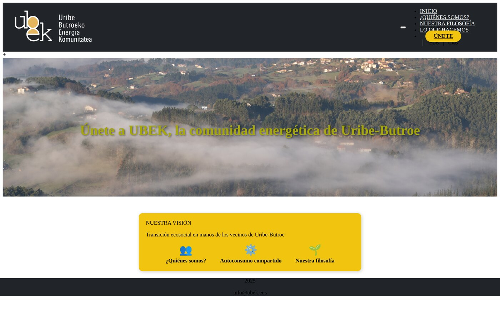
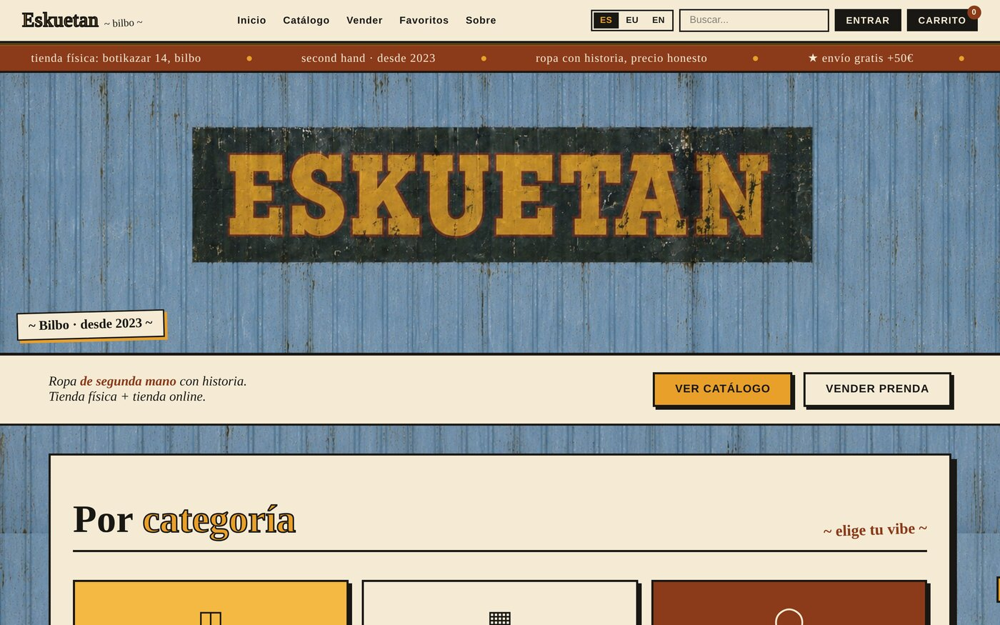
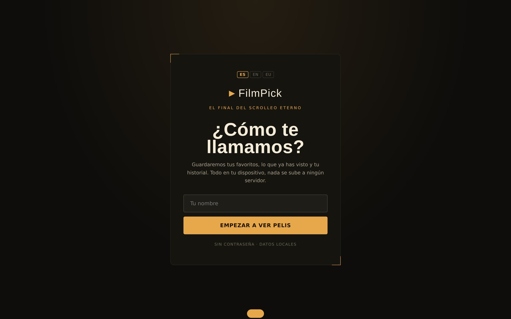
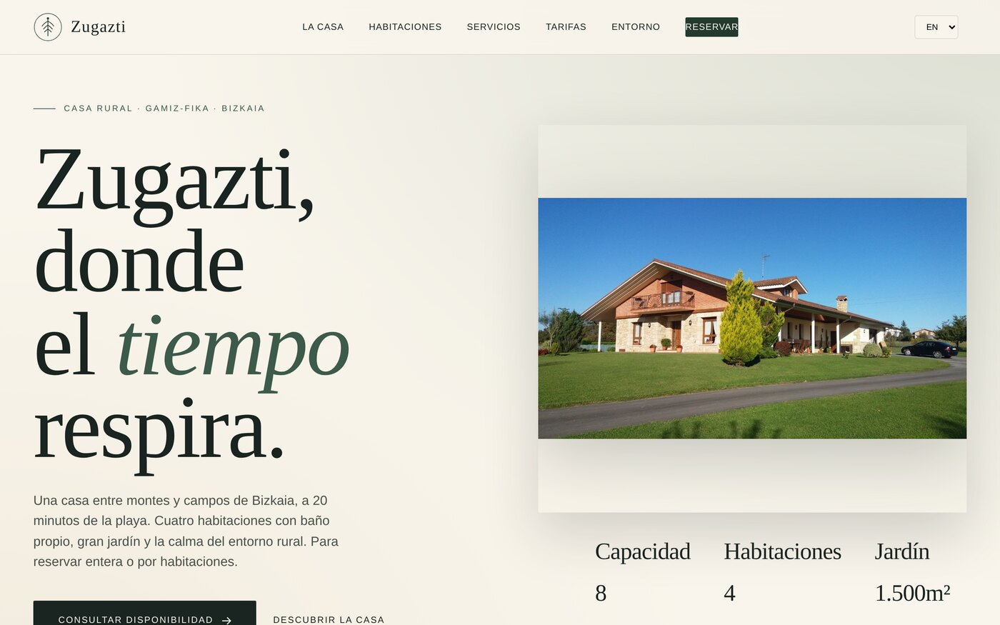
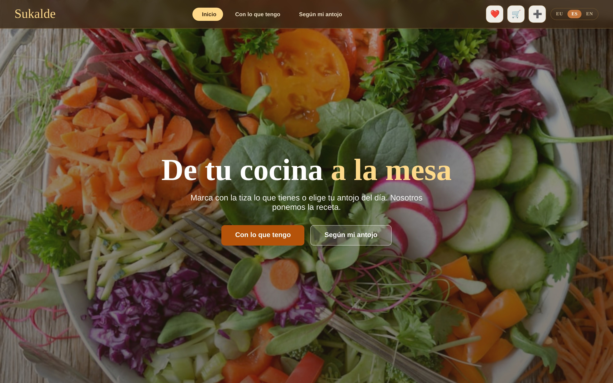

P-01 — Proyecto
Web · EU/ES
UBEK
—
—
PHPHTML5CSS3JavaScripti18nResponsive

Desarrolladora full-stack centrada en PHP, MySQL y JavaScript. Diseño la base de datos, levanto la API, programo la lógica y cuido la interfaz hasta el último píxel.
En último curso de Desarrollo de Aplicaciones Web, con experiencia real construyendo proyectos full-stack. Trabajo en castellano, euskera e inglés. Disponible para prácticas.
Full-stack de principio a fin: pensar los datos, exponerlos con una API limpia y convertirlos en una interfaz que apetezca usar.
He construido aplicaciones e interfaces completas con PHP, MySQL y JavaScript: autenticación, APIs REST, bases de datos relacionales con integridad referencial y frontends responsive. Ahí he aprendido sobre arquitectura, normalización y por qué cada decisión técnica tiene consecuencias.
Trabajo con JavaScript vanilla —sin frameworks— para dominar el DOM, el estado y el rendimiento antes de apoyarme en abstracciones. Me importa la accesibilidad, el responsive y dejar el código ordenado para quien venga detrás.
Lo que uso a diario, ordenado por dónde encaja en el proyecto.
Cinco proyectos reales. Cada uno resuelve un problema concreto y está hecho para usarse. Pulsa cualquier imagen para verla en grande.
—

—

—

—

—

La forma en la que abordo cualquier desarrollo, del primer boceto al despliegue.
Defino el problema y los objetivos.
Diseño la base de datos y la arquitectura de la API.
Programo backend y frontend en iteraciones.
Pruebo, optimizo y reviso el detalle visual.
Estoy dando mis primeros pasos como desarrolladora web y busco un proyecto donde crecer. Si crees que puedo encajar, cuéntame: estoy a un mensaje.